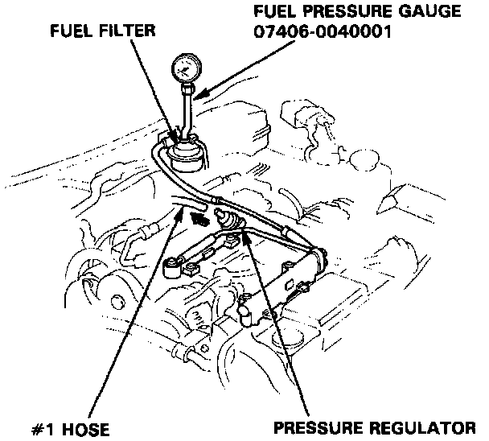

Fuel Pressure: Testing and Inspection

Inspection
1. Relieve fuel pressure.
2. Remove the service bolt on the top of the fuel filter while holding the banjo bolt with another wrench and attach the fuel pressure gauge.
3. Start the engine. Measure the fuel pressure with the engine idling and the #1 vacuum hose of the pressure regulator disconnected.
Pressure should be:
250 - 279 kPa (2.55 - 2.85 kg/cm2. 36 - 41 psi)
If the fuel pressure is not as specified, first check the fuel pump. If the pump is OK, check the following.
- If the pressure is higher than specified, inspect for:
- Pinched or clogged fuel return hose or piping.
- Faulty pressure regulator.
- If the pressure is lower than specified, inspect for:
- Clogged fuel filter.
- Pressure regulator failure.
- Leakage in the fuel line.